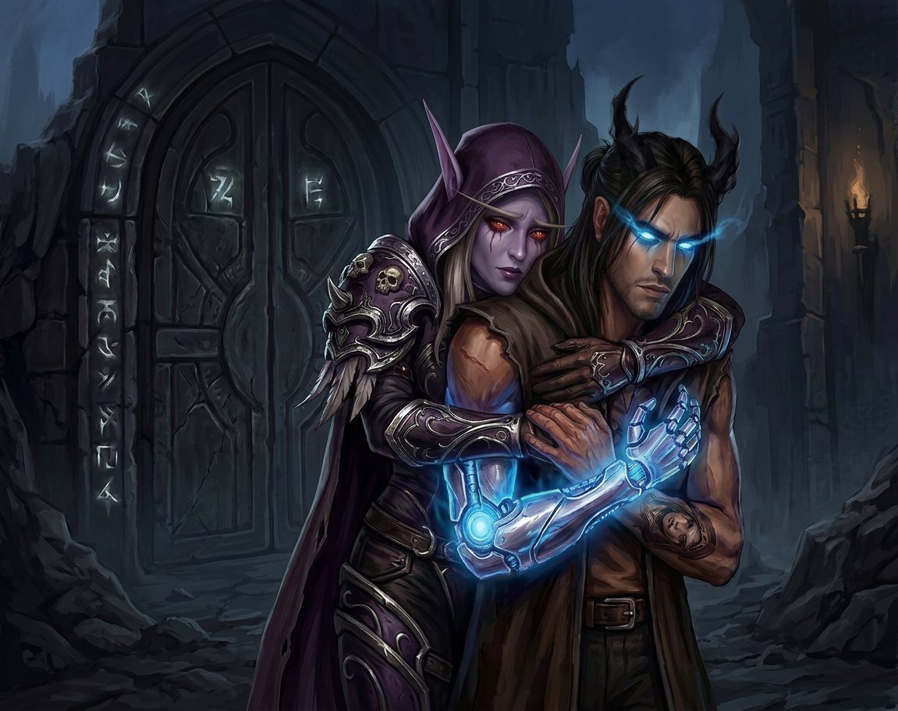

Capítulo Vinte e Seis
O que o corpo recusa
A porta estava a cinquenta metros quando o corpo de Nathan disse não.
Não foi um não educado. Não foi um não que pedisse licença ou que viesse acompanhado de uma explicação. Foi um não absoluto, primitivo, do tipo que não passa pelo raciocínio e não aceita negociação — o tipo de não que um corpo dá quando cada célula, cada nervo, cada fibra muscular decide ao mesmo tempo que aquilo não vai acontecer.
O tremor na mão direita virou tremor no braço inteiro. Depois no ombro. Depois no peito. As pernas perderam a coordenação — não de uma vez, mas em ondas, como se o chão tivesse começado a se mover sob os pés dele, e a primeira onda pegou o joelho direito, e a segunda pegou o esquerdo, e a terceira pegou os dois ao mesmo tempo, e Nathan tropeçou.
Não caiu. Sylvanas segurou ele pelo braço — o direito, o que tremia — antes que o joelho encontrasse o chão, e o segurou com aquela força que ela tinha, a força de quem passou séculos segurando coisas que não deviam ser seguras e aprendeu a não soltar.
— Nathan.
A voz dela estava calma. Absolutamente calma. Do jeito que ela falava quando o mundo estava desmoronando e ela tinha decidido que o mundo podia esperar.
— Eu estou... — ele começou, e a voz falhou. Não de emoção. De física. A garganta tinha apertado, o diafragma tinha travado, e o ar não saía do jeito que devia. — Eu estou bem.
Mentira de novo. E dessa vez ele nem tentou fazer parecer verdade.
✦
A prótese começou a brilhar.
Não o brilho fraco que ele tinha visto nos pesadelos — aquele violeta tímido que acendia e apagava como um sinal de alerta distante. Esse era diferente. Era violeta intenso, pulsante, e vinha acompanhado de um calor que subia pelo braço esquerdo e chegava no peito e se espalhava como se alguém tivesse acendido uma fogueira dentro dele.
Nathan olhou para a porta. A cinquenta metros. Selada. Escura. Com os sigilos apagados.
E os sigilos acenderam.
Não todos de uma vez — um por um, devagar, do jeito que uma fechadura antiga destrava, cada sigilo pulsando na mesma frequência do brilho da prótese, como se estivessem conversando, como se estivessem se reconhecendo, como se a porta e o braço dele fossem duas metades de uma coisa que tinha sido separada há muito tempo e agora estava se reencontrando.
E Nathan sentiu.
Sentiu a porta puxando. Não com as mãos, não com força — com alguma coisa que estava dentro dele, no Vazio, no lugar onde o conhecimento embutido vivia, e aquele conhecimento estava gritando sim, sim, abre, abre, é seu, é seu, é seu, e o corpo inteiro estava gritando não, não, não vai, não vai, não vai, e as duas vozes estavam dentro dele ao mesmo tempo e ele não sabia qual era a dele.
As asas abriram.
Sozinhas. Sem ele querer. Abas de energia do Vazio, escuras e translúcidas, pulsando na mesma frequência dos sigilos e da prótese, e Nathan não conseguia fechar e não conseguia controlar e não conseguia fazer nada além de ficar ali, parado, com o corpo tremendo e a prótese brilhando e as asas abertas e a porta puxando e o mundo girando.
— Não.
A voz não era dele. Era de Sylvanas. Perto do ouvido dele, firme, absoluta, sem nenhum traço de dúvida ou hesitação.
— Não hoje.
Ela virou ele. Com as duas mãos nos ombros dele, ela virou o corpo dele para longe da porta, e os pés dele obedeceram porque não tinham outra opção, porque quando Sylvanas decidia alguma coisa, o mundo inteiro obedecia, e Nathan era parte do mundo.

— Varokh — disse ela, sem olhar para trás. — A gente volta.
Varokh não perguntou por quê. Não precisava. Ele tinha visto. Elyra tinha visto. Os sigilos acesos, a prótese brilhando, as asas abertas, o corpo tremendo — e a expressão no rosto de Sylvanas que dizia agora não, aqui não, assim não.
✦
A volta foi mais longa do que a ida.
Não porque a distância fosse maior — dois quilômetros são dois quilômetros em qualquer direção. Mas porque Nathan andava devagar, com as pernas ainda trêmulas e a prótese ainda morna (o brilho tinha sumido quando eles se afastaram da porta, mas o calor tinha ficado, como se o metal tivesse absorvido alguma coisa e não quisesse devolver), e Sylvanas andava ao lado dele no ritmo dele, sem pressa, sem comentário, a três passos de distância.
Varokh ia na frente, o machado na mão, varrendo o terreno com aqueles olhos de quem já tinha visto muita coisa e sabia que a Gorja não respeitava ninguém que estivesse distraído. Elyra ia atrás, aparecendo e desaparecendo entre as pedras, e de vez em quando ela olhava para Nathan com aquela expressão que ele conhecia — a expressão de quem está guardando um comentário para depois, quando for a hora certa.
Ninguém falou durante os dois quilômetros.
Não porque não tivessem nada para dizer. Porque tudo o que precisava ser dito já tinha sido dito — pelo corpo de Nathan, pela voz de Sylvanas, pelos sigilos que tinham acendido e pela porta que tinha puxado. O resto era detalhe, e detalhe podia esperar.
✦
No abrigo, Nathan sentou-se de costas para a parede.
O mesmo lugar de sempre. O mesmo canto. A mesma posição em que ele sentava quando precisava pensar, quando precisava processar, quando precisava existir em silêncio enquanto o mundo girava ao redor.
A mão direita ainda tremia. Menos do que antes, mas tremia. A prótese estava quieta, fria, sem brilho — como se nada tivesse acontecido, como se a porta e os sigilos e o puxão tivessem sido um sonho. Mas não tinham sido. E Nathan sabia.
Sylvanas sentou-se ao lado dele. Não a três metros. Não a três passos. Ao lado. O ombro dela quase encostando no dele, o arco no colo, o capuz caído de novo (ela não tinha puxado de volta desde a manhã, e Nathan percebeu que aquilo — o capuz caído — era uma coisa que ela fazia quando estava com ele, só quando estava com ele, e que aquilo significava alguma coisa que ele ainda não tinha palavras para descrever).
— Você fez a coisa certa — disse Nathan, devagar.
— Eu sei.
— Como você sabia? Que era hora de parar?
Sylvanas ficou quieta por um tempo. Depois:
— Os sigilos acenderam. A prótese brilhou. As asas abriram sozinhas. E você não estava mais controlando nada. — Ela olhou para ele. — Você estava sendo puxado. Não estava indo. Estava sendo levado.
Nathan fechou os olhos. Porque ela estava certa. E porque admitir aquilo — em voz alta, para si mesmo, para ela — era a coisa mais difícil que ele tinha feito em muito tempo.
— Eu não estava indo — repetiu. — Eu estava sendo levado.
— Sim.
— E se eu tivesse entrado assim...
— Você não teria entrado como Nathan. Você teria entrado como ferramenta. Como chave. Como a coisa que ele fabricou para abrir a porta. — A voz dela era baixa, firme, sem julgamento. — E eu não vou deixar você entrar naquela porta como ferramenta. Você entra como Nathan ou não entra.
Nathan abriu os olhos. Os olhos azuis brilhantes encontraram os vermelhos, e havia alguma coisa nos olhos dela que ele não via com frequência — não era urgência, não era cálculo. Era paciência. A paciência de quem tinha esperado trezentos e sessenta e um dias e podia esperar mais um pouco.
— Quanto tempo? — perguntou ele.
— O tempo que for preciso.
— E se o Colecionador voltar antes?
Sylvanas olhou para a entrada do abrigo. Para a Gorja lá fora. Para a porta invisível a dois quilômetros de distância.
— Aí a gente enfrenta — disse. — Do lado de fora. Juntos. Com Varokh segurando o centro e Elyra no flanco e você prevendo e eu a três passos de você. — Uma pausa. — Mas isso é se. Até lá, a gente se prepara. Você se prepara. Para entrar naquela porta como Nathan, não como chave.
Nathan assentiu. Devagar. O tremor na mão diminuiu um pouco — não sumiu, mas diminuiu, como se a mão tivesse ouvido a voz dela e tivesse decidido que podia relaxar um pouco, que podia confiar um pouco.
— Como? — perguntou ele. — Como eu me preparo para isso?
Sylvanas não respondeu imediatamente. Olhou para ele por um tempo longo, com aquela expressão de quem está medindo alguma coisa, calculando alguma coisa, e chegando à conclusão de que a coisa medida precisa de tempo.
— Dormindo — disse, enfim. — Você disse que as memórias vêm quando você dorme. Que o corredor aparece. Que o molde fala. — Ela parou. — Então a gente vai usar isso. Você vai dormir, e você vai ver o resto, e você vai entender o que tem lá dentro antes de abrir a porta. E quando você abrir, você vai abrir sabendo. Não sendo puxado. Sabendo.
— E se o molde falar de novo? Se ele estender a mão?
— Aí você diz não. — Ela olhou para ele. — E eu estou aqui quando você acordar. Como eu estive ontem. Como eu vou estar sempre.
Nathan olhou para ela. E pensou que aquilo — aquela frase, aquela promessa, aquela certeza absoluta de que ela estaria ali — era a coisa mais corajosa que alguém já tinha dito para ele. Mais corajosa do que "eu vou mesmo assim". Mais corajosa do que "pronto". Porque "eu vou estar aqui sempre" não era uma decisão de um momento. Era uma decisão de todos os momentos. E ela tinha feito aquela decisão há muito tempo, e não tinha voltado atrás, e não ia voltar.
— Tá — disse ele.
E a voz saiu firme. Não porque o medo tinha ido embora — porque ele tinha decidido que o medo não ia ser a última palavra. De novo. E de novo. E de novo, quantas vezes fossem necessárias.
✦
Varokh apareceu na entrada do abrigo com lenha para o fogo. Elyra apareceu atrás com água. Nenhum dos dois perguntou o que tinha acontecido — não porque não quisessem saber, mas porque tinham visto, e porque sabiam que quando fosse a hora de falar, Nathan falaria, e até lá o silêncio era respeito.
O fogo foi aceso. O café foi feito. Os quatro sentaram em volta, do jeito que faziam sempre, e por um tempo longo ninguém disse nada.
Foi Elyra quem falou primeiro, porque era sempre Elyra.
— Então — disse, com a voz calma demais, do jeito que ela falava quando estava organizando coisas terríveis em categorias. — A porta responde ao Nathan. Os sigilos acendem quando ele chega perto. A prótese brilha. As asas abrem sozinhas. E ele é puxado, não vai.
Ela olhou para os três.
— Isso significa que a porta foi feita para ele abrir. Que ele é a chave. E que o Colecionador sabe disso. — Uma pausa. — E se o Colecionador sabe disso, ele vai voltar. Porque ele vai querer usar a chave.
Varokh apoiou o machado contra o joelho.
— Então a gente tem dois problemas — disse. — Um: o Nathan precisa estar pronto para abrir a porta como ele, não como ferramenta. Dois: a gente precisa estar pronto para quando o Colecionador voltar, porque ele vai voltar, e ele vai querer a chave.
— Três — disse Sylvanas. — A gente precisa estar pronto para a possibilidade de que, quando a porta abrir, alguma coisa saia. Ou alguém.
Silêncio.
— O molde — disse Nathan, devagar.
— O molde — concordou Sylvanas.
Elyra olhou para Varokh. Varokh olhou para Elyra. E os dois fizeram aquele exchange silencioso que faziam desde o primeiro dia — meio segundo de olhos que dizia mais do que qualquer conversa.
— Então a gente se prepara — disse Varokh. — Para tudo. Para o Nathan estar pronto. Para o Colecionador voltar. Para o molde sair. Para qualquer coisa que venha por aquela porta.
— Como? — perguntou Nathan.
— Do jeito que a gente sempre se preparou — disse Varokh. — Com tempo. Com paciência. Com teimosia. — Ele olhou para Nathan. — E com você dormindo, porque aparentemente é dormindo que você descobre as coisas.
Nathan quase riu. Quase. O riso morreu na garganta porque o corpo ainda estava trêmulo e o peito ainda estava pesado e o medo ainda estava ali. Mas quase riu. E quase já era alguma coisa.
✦
Naquela noite, antes de dormir, Nathan procurou a mão de Sylvanas.
Não foi diferente das outras noites. Foi a mão de metal encontrando a mão fria no escuro, e os dedos se encaixando, e ficarem assim por um tempo, sem dizer nada. Mas dessa vez tinha uma coisa a mais — uma coisa que Nathan não tinha sentido antes, ou que tinha sentido mas não tinha nome para descrever.
Gratidão.
Não gratidão genérica, do tipo que a gente sente quando alguém faz um favor. Gratidão específica, do tipo que a gente sente quando alguém te impede de fazer uma coisa que você não devia fazer, mesmo quando você queria fazer, mesmo quando você achava que estava pronto, e te impede sem julgamento, sem sermão, sem "eu te avisei" — só com a mão firme no ombro e a voz calma dizendo "não hoje".
— Obrigado — sussurrou ele, no escuro.
Sylvanas não respondeu. Não precisava. A mão dela apertou a dele — uma vez, firme — e aquilo foi resposta suficiente.
E Nathan dormiu.
Sem sonhar. Sem corredor. Sem molde. Sem porta.
Só escuro. Só silêncio. Só o calor de uma mão fria na dele.
E a certeza de que amanhã — ou depois, ou quando fosse a hora — ele ia tentar de novo. E se o corpo dissesse não de novo, ele ia ouvir. E ia esperar. E ia tentar de novo. Até que o corpo dissesse sim. Até que ele pudesse abrir a porta como Nathan. Não como chave.
Como Nathan.